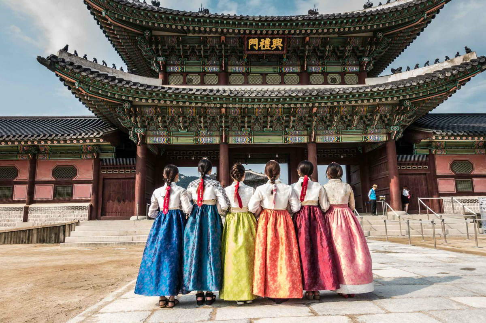
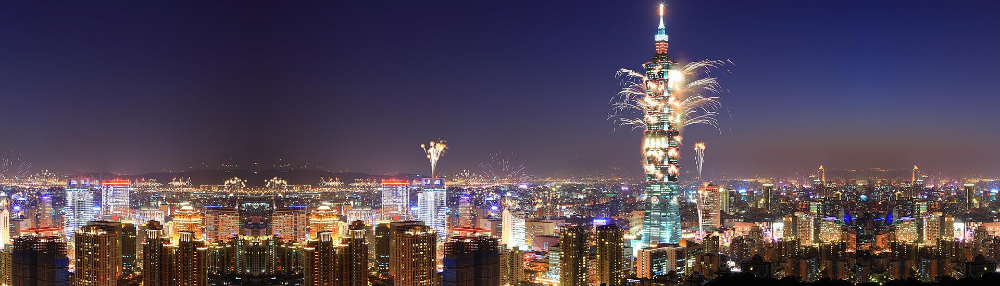

-
China
Acient Treasures, Modern Wonders
-

Japan
Endless Discovery
-

Korea
Imagine Your Korea
-

Taiwan
The Heart of Asia
Shanghai is the cool, confident face of modern China, and its energy is infectious. Go to the Bund to watch ships on the river and marvel at the huge variety of architectural styles on display, or watch the crowds go by in People’s Square. Shoppers should make a beeline for the Fabric Market, where you can have a suit or dress tailor-made for you at bargain prices. At night, explore all manner of fashionable restaurants, bars and nightclubs or just stroll through the city enjoying the spectacular neon lights.
Tokyo can't be judged from the outside, since those expecting ancient monuments will instead be greeted with modern drabness. The Imperial Palace, still home to the Emperor, shouldn't be missed, and the Edo-Tokyo Museum details the city's history. Sensoji Temple is the city's oldest, and the Tokyo National Museum holds the largest collection of Japanese art in the world.
Busan is Korea's second largest city. Tourists often come to this region to hike and to visit the Buddhist Temples located deep within the region's mountains. The Beomeosa Temple, founded in 678 AD, is perhaps one of the most frequented temples in the area and is always packed with worshipers and tourists. For art buffs, Busan offers several museums and historical buildings. If scenery is your thing, try visiting the Dongbaek Island, or bird watch at the Nakdong river estuary.
You can eat very well—and very cheaply—in Taipei. The restaurants may not look posh, but the quality of the food is superlative. And there’s a huge variety of restaurants—in addition to local Taiwanese specialties, you’ll find regional cuisines from all over China, as well as great Indian, Japanese and even Italian options. Just make sure to leave some room for snacks—street-vendor food here is addictive.
The Great Wall of China (萬里長城) is a series of fortifications made of stone, brick, tamped earth, wood, and other materials, generally built along an east-to-west line across the historical northern borders of China to protect the Chinese states and empires against the raids and invasions of the various nomadic groups of the Eurasian Steppe.
Meiji Jingu (明治神宮), located in Shibuya, Tokyo, is the Shinto shrine that is dedicated to the deified spirits of Emperor Meiji and his wife, Empress Shōken.[1][2] The shrine does not contain the emperor's grave, which is located at Fushimi-momoyama, south of Kyoto.
Changdeokgung (昌德宮), also known as Changdeokgung Palace or Changdeok Palace, is set within a large park in Jongno-gu, Seoul, South Korea. It is one of the "Five Grand Palaces" built by the kings of the Joseon Dynasty (1392–1897).
The Taipei 101 , formerly known as the Taipei World Financial Center – is a landmark supertall skyscraper in Xinyi District, Taipei, Taiwan. The building was officially classified as the world's tallest in 2004, and remained such until the completion of the Burj Khalifa in Dubai in 2010.